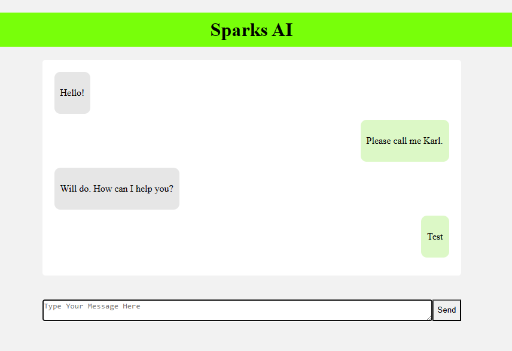

Overview
This tutorial will guide you through building a basic AI chat bot using the following technology stack:
- FastAPI;
- For the backend API of the chatbot, and in conjunction with Jinja2, to render the website.
- HTMX;
- HTMX was chosen because it provides a simplified approach to create dynamic websites without the need for a frontend framework.
- docker; and
- Docker will be used to containerize the application.
- GPT-4
- GPT-4, accessed via the langchain package, will serve as our underlying model.
Project set up
Start by creating a new directory for the project. Then, initiate a new virtual environment. I prefer venv, but you’re welcome to use alternatives like conda or poetry.
python -m venv .venvNext, activate the virtual environment. The following command is suitable for a Linux-based system. Setting up this environment aids in managing the project’s dependencies, and will streamline containerization down the road.
source .venv/bin/activateFastapi
Installation
Execute the command below to install FastAPI, Uvicorn, and Jinja2. Uvicorn will serve the FastAPI application, while Jinja2, a templating engine, will help render the website.
pip install fastapi uvicorn['standard'] jinja2Create the Fastapi application
Make a new file named main.py and add the provided code to it.
from fastapi import FastAPI, Request
app = FastAPI() # Create the Fastapi application
@app.get("/") # Create a route for the root of the website
def index(request: Request): # Define the function that will be called when the route is hit
return {"Hello": "World"} # Return a simple hello world json responseThis initializes the basic FastAPI application. Setting up a basic web app is straightforward, requiring only a few lines of code.
To start the web app, execute the following:
uvicorn main:app --reloadHere, main refers to the main.py file, and app points to the FastAPI application initialized within main.py. The --reload flag automatically reloads the server upon detecting code modifications, making development smoother. If you run the above command and then navigate to http://127.0.0.1:8000 you should be greeted by the Hello World json response. One nefty feature of fastapi is the automatic docs generated. You can find them at http://127.0.0.1:8000/docs, which will not only allow you to see the documenation but also test the API and its responses.
Jinja2 and HTMX
To enhance the landing page’s aesthetic, HTML templates will be crafted using Jinja2. If you’re familiar with Flask, you’ll recognize this templating mechanism. In essence, it allows rendering of HTML based on templates and variables.
Create a directory named templates and inside, a new file titled index.html. Add the given code to this index.html file.
<!DOCTYPE html>
<html lang="en">
<head>
<meta charset="utf-8">
<meta http-equiv="X-UA-Compatible" content="IE=edge">
<meta name="viewport" content="width=device-width, initial-scale=1.0">
<title>Hello world</title>
</head>
<body>
<h1>Hello world</h1>
</body>
</html>You can now modify the main.py file in a few specific ways:
- Import
Jinja2Templatesfrom fastapi.templating - Instantiate
Jinja2Templates, pointing it to the templates directory. - Update the index function to utilize the Jinja2Templates instance to render the
index.htmltemplate.
Your main.py should look like this now.
from fastapi import FastAPI, Request
from fastapi.templating import Jinja2Templates
app = FastAPI() # Create the Fastapi application
templates = Jinja2Templates(directory="templates") # Create a new instance of Jinja2Templates
@app.get("/") # Create a route for the root of the website
def index(request: Request): # Define the function that will be called when the route is hit
return templates.TemplateResponse("index.html", {"request": request}) # Render the index.html templateAfter saving this the server should automatically restart. Now navigating to http://127.0.0.1:8000 should show the Hello world text. This is because the index.html template is being rendered. This is a pretty basic template, the next step is to add HTMX to the template to give it a chat box for the AI. To do this add the following code to the index.html file.
<!DOCTYPE html>
<html lang="en">
<head>
<meta charset="utf-8">
<meta http-equiv="X-UA-Compatible" content="IE=edge">
<meta name="viewport" content="width=device-width, initial-scale=1.0">
<title>AI Chat Bot</title>
<link rel="stylesheet" type="text/css" href="static/styles.css">
<script src="https://unpkg.com/htmx.org@latest"></script>
</head>
<body>
<h1 class="ai-title">Sparks AI</h1>
<div class="chat-container">
<div class="chat-box" id="chat-box-id">
{% include 'chat-messages.html' %}
</div>
<form hx-post="/ask-ai" hx-target="#chat-box-id" hx-swap="innerHTML" class="user-input">
<textarea id="textInput" class="form-control input-text" name="message" placeholder="Type Your Message Here"></textarea>
<input id="buttonInput" class="btn btn-success input-button" type="submit" value="Send">
</form>
</div>
</body>
</html>Several modifications are made in the updated index.html file:
The hx-post, hx-target, and hx-swap attributes are utilized by HTMX to make AJAX-like calls without using JavaScript. First, hx-post is used to identify which route the form should post to. It currently points to the ask-ai endpoint, which we will create later. The hx-target attribute identifies the element to be updated with the response from the server. In this instance, it will be the chat-box div. The hx-swap attribute determines how the target element should be updated. For our purposes, it will replace the innerHTML of the chat-box div with the server response. Alternatives methods include beforeend, which appends the returned HTML to the end of the target. Since we render the entire chat history each time we hit the endpoint, we want to replace the innerHTML to avoid displaying duplicate messages.
The {% include 'chat-messages.html' %} line references a Jinja2 include directive. This embeds the chat-messages.html content into the index.html file, promoting modularity, especially for expansive projects.
{% for message in chat_messages %}
{% if message.user == "user" %}
<div class="user-message">
<p>{{ message.message }}</p>
</div>
{% else %}
<div class="bot-message">
<p>{{ message.message }}</p>
</div>
{% endif %}
{% endfor %}This will render the entire history, giving each a different format depending on if its a user or bot message. To format these templates well you should incude the following CSS in a file called styles.css in the static directory.
.chat-container {
display: flex;
flex-direction: column;
max-width: 700px;
margin: 0 auto;
}
.chat-box {
display: flex;
flex-direction: column;
padding: 20px;
overflow-y: auto;
flex: 1;
border-radius: 5px;
background-color: #ffffff;
margin-bottom: 20px;
}
.user-message {
align-self: flex-end;
background-color: #dcf8c6;
color: #000;
padding: 10px;
border-radius: 10px;
margin-bottom: 10px;
max-width: 80%;
}
.bot-message {
align-self: flex-start;
background-color: #e6e6e6;
color: #000;
padding: 10px;
border-radius: 10px;
margin-bottom: 10px;
max-width: 80%;
}
.user-input {
display: flex;
margin-top: 20px;
}
.input-text {
flex: 1;
border-top-right-radius: 0;
border-bottom-right-radius: 0;
}
.input-button {
border-top-left-radius: 0;
border-bottom-left-radius: 0;
}
.ai-title {
text-align: center;
color: black; /* White text color for contrast against green background */
padding: 10px 20px;
border-radius: 8px;
background-color: rgba(119, 255, 8, 0.993); /* Semi-transparent black background for the title */
}
body {
background-color: #f2f2f2;
}Before adjusting the main.py to accommodate the new template, let’s define a Pydantic class, ChatMessage, providing structure for data creation and retrieval.
from pydantic import BaseModel, constr
class ChatMessage(BaseModel):
user: constr(min_length=1, max_length=20)
message: constr(min_length=1, max_length=100)Next we modify main.py to use the new ChatMessage class and the new templates.
from fastapi import FastAPI, Request, Form
from fastapi.responses import HTMLResponse
from fastapi.templating import Jinja2Templates
from fastapi.staticfiles import StaticFiles
from models import ChatMessage
app = FastAPI()
app.mount("/static", StaticFiles(directory="static"), name="static") # Mount the static directory to the /static route to make the CSS accessible
templates = Jinja2Templates(directory="templates/")
chat_messages = [ # Simple hard coded message history
ChatMessage(user="AI", message="Hello!"),
ChatMessage(user="user", message="Please call me Karl."),
ChatMessage(user="AI", message="Will do. How can I help you?"),
]
@app.get("/", response_class=HTMLResponse)
def index(request: Request) -> HTMLResponse:
return templates.TemplateResponse(
"index.html", {"request": request, "chat_messages": chat_messages} # Pass the chat_messages to the template
)
@app.post("/ask-ai", response_class=HTMLResponse) # Create a new route for the ask-ai endpoint
def ask_ai(request: Request, message: str = Form(...)) -> HTMLResponse:
chat_messages.append(ChatMessage(user="user", message=message)) # Add the user message to the chat_messages
return templates.TemplateResponse(
"chat-messages.html", {"request": request, "chat_messages": chat_messages} # Pass the chat_messages to the template
)The primary change here is the inclusion of the ask-ai endpoint. The form’s hx-post attribute will post to this route. This function appends the user’s message to the chat_messages list and subsequently returns the updated chat-messages.html template. This is displayed in the chat box, governed by the hx-target and hx-swap attributes.
Running the updated app should show the below:

Docker
To close out this tutorial, we’ll draft a Dockerfile to containerize the app, which simplifies deployment to a server. First, ensure you’ve generated your requirements.txt file, achieved with the following:
pip freeze > requirements.txtNext you need to create a new dockerfile. You can do so with the following command:
docker initThis will request some information needed to create a new dockerfile. The main thing you will need is to input the command needed to run the server, here use the normal one we have been using.
uvicorn main:app --reloadAfter that you should have a dockerfile created in your project. You can then build the docker image with the following command:
docker compose buildFinally, you run this image with the following command:
docker run -p 8000:8000 image-nameRemember, the -p 8000:8000 flag is crucial, instructing Docker to bind the container’s 8000 port to the external. You can then navigate to http://127.0.0.1:8000/ to see the app running.